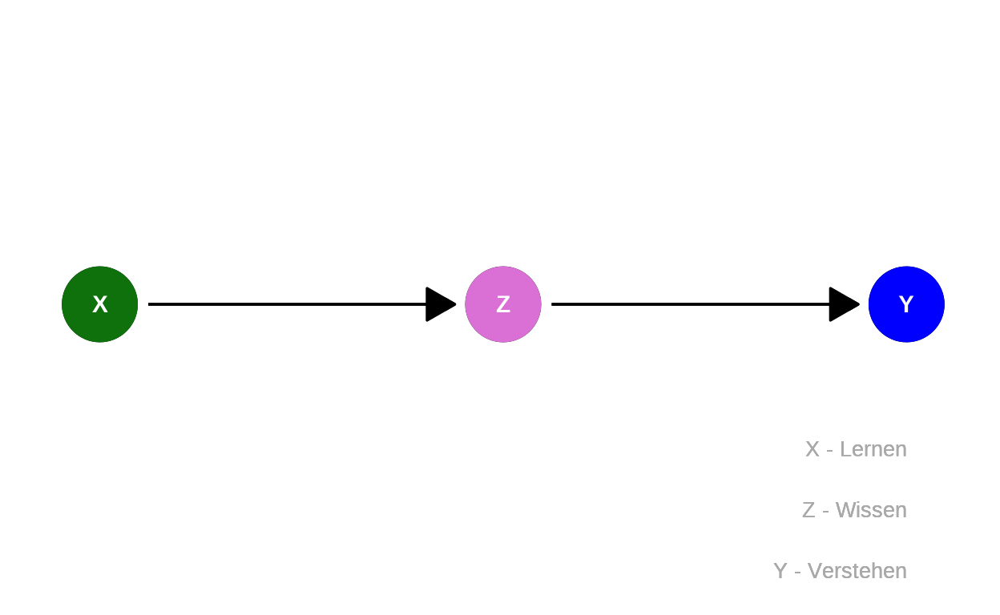
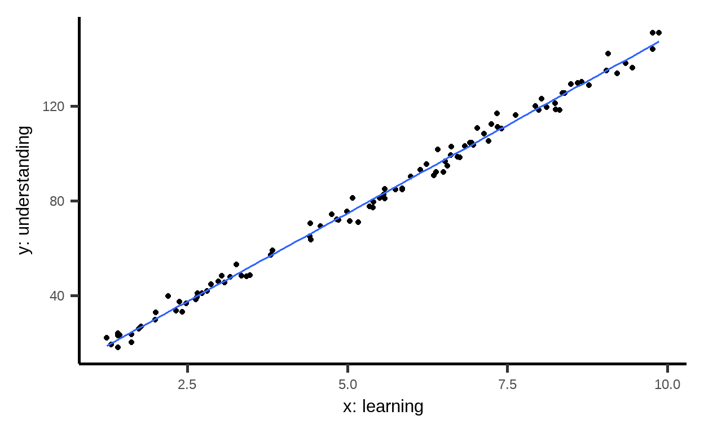

Learning objectives
In this module you will learn:
about causal chains,
mediators,
and that sometimes it is better not to consider certain variables in the analysis.
One thing leads to another
Even complex causal graphs consist of simple basic elements. One of them is the so-called chain.
As a reminder, causality flows along the arrows. \[A \rightarrow B\] states that \(B\) listens to \(A\). For example, if it rains, (\(A\)), the road gets wet (\(B\)).
In a chain, we simply add a third variable: \[A \rightarrow B \rightarrow C.\] For example: if it rains, (\(A\)) the road gets wet (\(B\)) and thus it may turn slippery (\(C\)).
Learning and understanding
The following example is fictitious – and a very strong simplification. Moreover, the important question of how the variables are measured in each case will be ignored.
Note: The AI Campus course Stadt | Land | DatenFluss has a section on this topic, “Welche Information steckt in Daten?”
Suppose
If this highly simplified model is correct, then the assumption can be represented in a causal graph:

The structural causal model consists of the following assignments:
\[\begin{eqnarray*} \color{green}{X} &=& U_{\color{green}{X}}\\ \color{violet}{Z} &=& f_{\color{violet}{Z}}(\color{green}{X}, U_{\color{violet}{Z}})\\ \color{blue}{Y} &=& f_{\color{blue}{Y}}(\color{violet}{Z},U_{\color{blue}{Y}}). \end{eqnarray*}\]
The value of
Mediators
In such scenarios \[\color{green}{X} \rightarrow \color{violet}{Z} \rightarrow \color{blue}{Y}\] the variable in the middle – here \(\color{violet}{Z}\) – is called a mediator.
To study the causal effect of the cause (\(\color{green}{X}\)) on the effect (\(\color{blue}{Y}\)), we do not need to know
the value of the mediator (\(\color{violet}{Z}\)). So, for example, if
we want to know how
In fact, accounting for the mediator can even cause the causal effect to be biased. We will look at this in more detail below with the help of a small simulation.
Note: In the context of mediation, we can distinguish between total, direct, and indirect effects. In the example, we are interested in the so-called total effect of gender: How does gender affect salary, regardless of the specific mechanisms involved?
If instead we were interested in the extent to which gender has an effect on salary independent of promotion, the target of analysis would be the so-called direct effect. And if we were interested in the extent to which the effects of gender are mediated by promotion (do women earn less because they are less likely to be promoted?), the analysis target would be the indirect effect.
Data simulation
Let us return to the associations between learning, knowledge and
understanding. We simulate the following in R:
\[\begin{eqnarray*} \color{green}{X} &=& U_{\color{green}{X}}\\ \color{violet}{Z} &=& f_{\color{violet}{Z}}(\color{green}{X}, U_{\color{violet}{Z}})\\ \color{blue}{Y} &=& f_{\color{blue}{Y}}(\color{violet}{Z},U_{\color{blue}{Y}}). \end{eqnarray*}\]
Recall from Module 2 that \(U\) denotes unknown causes and \(f\) the functions by which values are assigned to the variables.
Simulate observations by clicking ‘Run’ several times and try to see how the variables are related to each other:
x <- U_X()
cat("Value of x (learning):", x,"\n")
z <- f_Z(x)
cat("Value of z (knowledge):", z,"\n")
y <- f_Y(z)
cat("Value of y (understanding):", y,"\n")Intervention
Instead of just observing (\(\color{green}{X} = U_{\color{green}{X}}\)), we can also simulate an intervention where we set values (\(do(\color{green}{X}=x)\)).
In the code example, \(do(\color{green}{X}=1)\). Press
Run Code a few times to see what the values of
understanding (\(\color{blue}{Y}\))
look like in the case of \(do(\color{green}{X}=1)\). Then change the
code to simulate \(do(\color{green}{X}=10)\). What
happens?
# Here is the comman to assign do(X=1)
x <- 1
cat("Value of x (learning):", x, "\n")
z <- f_Z(x)
cat("Value of z (knowledge):", z, "\n")
y <- f_Y(z)
cat("Value of y (understanding):", y, "\n") # do(X=10)
x <- 10
cat("Value of x (learning):", x, "\n")
z <- f_Z(x)
cat("Value of z (knowledge):", z, "\n")
y <- f_Y(z)
cat("Value of y (understanding):", y, "\n")What happens here?
While the values of \(\color{blue}{Y}\) fluctuate around \(\color{blue}{15}\) for \(do(\color{green}{X}=1)\), they fluctuate around \(\color{blue}{150}\) for \(do(\color{green}{X}=10)\). Thus, we see that a change in \(\color{green}{X}\) actually leads to a change in \(\color{blue}{Y}\). This causal relationship is mediated by \(\color{violet}{knowledge}\): More learning leads to more knowledge leads to more understanding.
Feel free to try this out by pressing Run Code:
x <- U_X()
cat("Value of x (learning):", x,"\n")
z <- 15
cat("Value of z (knowledge):", z,"\n")
y <- f_Y(z)
cat("Value of y (understanding):", y,"\n")The value of z is set to \(15\) in line 3, regardless of the value of
x. Now x and y still fluctuate
randomly, but are independent of each other.
Causal model
The underlying equations of the causal model that we just simulated are:
\[\begin{eqnarray*} \color{green}{X} &=& U_{\color{green}{X}}, \quad U_{\color{green}{X}} \sim \mathcal{G}(1,\,10), \\ \color{violet}{Z} &=& 5 \cdot \color{green}{X} + U_{\color{violet}{Z}}, \quad U_{\color{violet}{Z}} \sim \mathcal{N}(0,\,1), \\ \color{blue}{Y} &=& 3 \cdot \color{violet}{Z} + U_{\color{blue}{Y}}, \quad U_{\color{blue}{Y}} \sim \mathcal{N}(0,\,1). \end{eqnarray*}\]
Here \(\mathcal{G}(1,\,10)\) stands for the uniform distribution on the range \(1\) to \(10\) and \(\mathcal{N}(0,\,1)\) for a normal distribution with the parameters \(\mu=0\) and \(\sigma=1\), i.e., a standard normal distribution. The functions and parameters were arbitrarily chosen.
Substituting \(f_{\color{violet}{Z}}\) into \(f_{\color{blue}{Y}}\) results in \(\color{blue}{Y} = 3 \cdot (5 \cdot \color{green}{X} + U_{\color{violet}{Z}}) + U_{\color{blue}{Y}}=15 \cdot \color{green}{X} + 5 \cdot U_{\color{violet}{Z}} + U_{\color{blue}{Y}}.\)
For \(n=100\) simulated
observations, the corresponding R code is:
## Preparation
library(mosaic) # load package
set.seed(1896) # fix random number generator to ensure reproducibility
## functions
U_X <- function(n = 1) runif(n, min = 1, max = 10)
f_Z <- function(x) 5 * x + rnorm(length(x))
f_Y <- function(z) 3 * z + rnorm(length(z))
## data table
n <- 100 # number of observations
SimData <- tibble(x = U_X(n)) %>%
mutate(z = f_Z(x)) %>%
mutate(y = f_Y(z)Linear regression, attempt 1
Of course, in most cases, we don’t know which system of equations underlies our data. Instead, we collect data and then examine the associations to make inferences about the underlying system. One method for estimating relationships between variables \(\color{green}{X}\) and \(\color{blue}{Y}\) using observed data is linear regression.
Note: You can learn more about linear regression in the AI Campus course The Elements of AI, chapter on machine learning.
Here, we assume that the relationship between the variable to be explained \(\color{blue}{Y}\) and the other variables in the model is linear, i.e., it is sufficient to only estimate the respective slope to describe the relationship. This is what it looks like when we calculate the relationship between learning and understanding in our simulated data:

In R a linear regression can be run via the function
lm().
Without the mediator
# Calculate regression
ModelA <- lm(y ~ x, data = SimData)
# Results
ModelA##
## Call:
## lm(formula = y ~ x, data = SimData)
##
## Coefficients:
## (Intercept) x
## 0.5414 14.8623So our model looks like this:
\[\widehat{\color{blue}{\text{Understanding}}} = 0.54 + 14.86 \times \color{green}{\text{Learning}}\]
According to this model, the (total) causal effect of
This is consistent with the results of our simulated intervention: while the values for \(\color{blue}{Y}\) fluctuated around \(\color{blue}{15}\) for \(do(\color{green}{X}=1)\), they were around \(\color{blue}{150}\) for \(do(\color{green}{X}=10)\). The linear regression results are thus indeed consistent with the causal effect of interest.
Note: This course focuses on the identification of causal
effects. We will thus spend little time on estimation procedures and
statistical inference. However, if you are already familiar with linear
regression, here is how to get the usual regression table
incl. standard errors, p values, etc. via summary():
# Run regression
ModelA <- lm(y ~ x, data = SimData)
# Results
summary(ModelA)Linear regression, attempt 2
But what happens if the mediator
# Run regression
ModelB <- lm(y ~ x + z, data = SimData)
# Results
ModelB##
## Call:
## lm(formula = y ~ x + z, data = SimData)
##
## Coefficients:
## (Intercept) x z
## 0.4260 0.8636 2.8032Returning the following model:
\[\widehat{\color{blue}{\text{Understanding}}} =
0.43 + 0.86 \times \color{green}{\text{Learning}} + 2.8 \times
\color{violet}{\text{Knowledge}}\] If
Note: The estimated values in the regression do not correspond to the true values we used for the simulation due to random noise.
Summary
To determine the (total) causal effect of \(X\) on \(Y\) in a chain \[X \rightarrow Z \rightarrow Y\], any mediator \(Z\) should not be considered. When \(Z\) is conditioned upon (e.g., when the variable is included in a regression), the causal relationship between \(X\) and \(Y\) is broken.
Note
This course was supported by a grant from the German Federal Ministry of Education and Research, grant number 16DHBQP040.